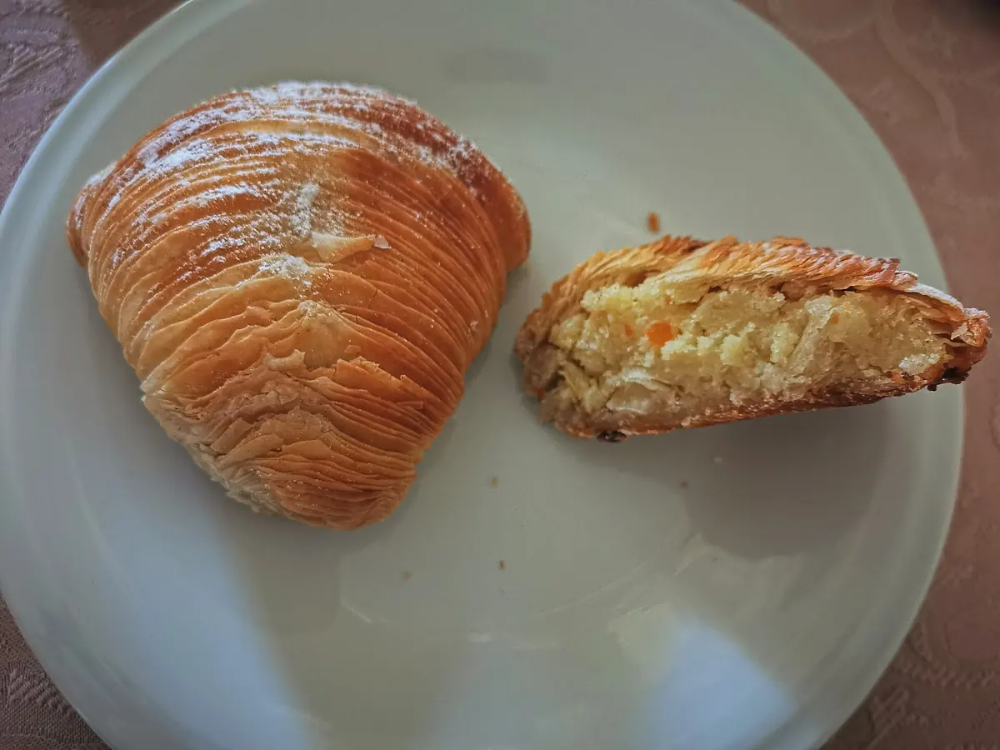
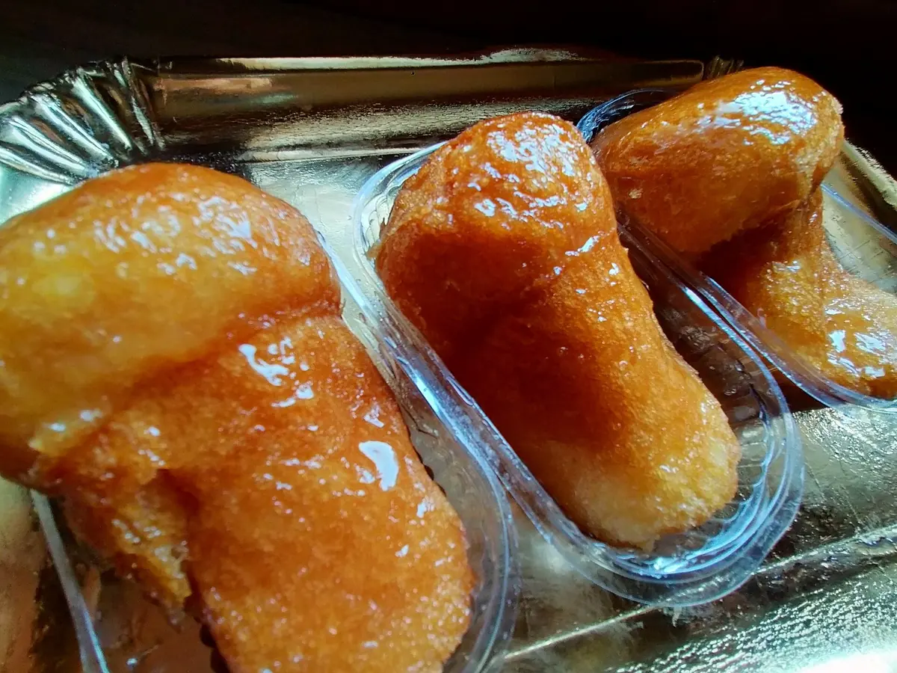
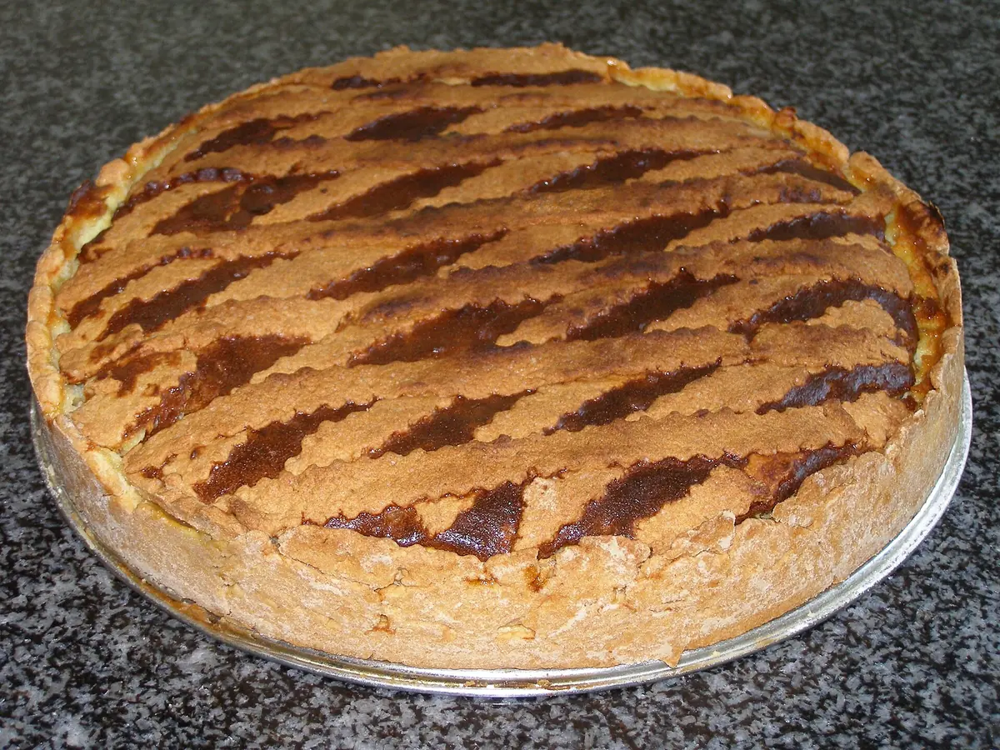
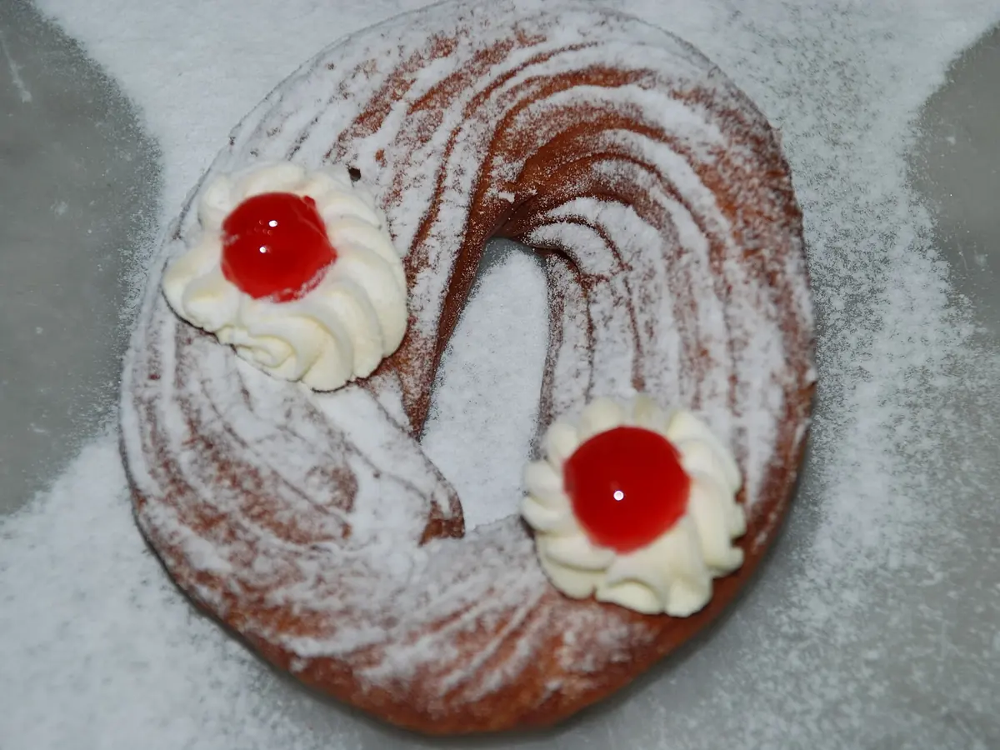

Artigiani per passione, dal 1973
Da oltre cinquant'anni Ceraldi Caffè è il bar di Piazza Carità, tra via Toledo e la Pignasecca. Si entra la mattina presto per il primo caffè e una sfogliatella calda, si torna a metà giornata per un dolce dalla vetrina, ci si ferma la sera per l'aperitivo.
Il locale è quello di un bar napoletano elegante: specchi, sedute in pelle rossa, il bancone sempre affollato e una vetrina di pasticceria rinnovata ogni giorno. La pasticceria segue la tradizione della città, con qualche dolce della casa che non trovi altrove.
A Napoli il caffè non è solo un caffè: è il momento in cui la città si ferma, anche solo per un minuto.
Le specialità della casa
Oltre all'espresso e ai classici della pasticceria napoletana, al bancone trovi caffè e dolci nati da Ceraldi.
Al bancone
- Caffè CeraldiCioccolata calda sul fondo, crema di caffè e panna montata fresca.
- Caffè BabàCrema di caffè, crema al babà, un babà mignon e panna fresca.
- MichelinoEspresso, crema di zucchero e panna sciolta a bagnomaria.
- NocciolatoEspresso con crema di zucchero, pasta di nocciola Piemonte IGP e cacao.
- PistacchiottoEspresso con crema di pistacchio e granella tostata.
- Caldo freddoEspresso, crema di zucchero e crema di latte montata a freddo.
In vetrina
- Segreto amalfitanoBabà bagnato al limoncello con cuore di chantilly ai limoni di Amalfi.
- CestinoIl riccio della sfogliatella farcito con chantilly e frutti di bosco.
- BabàmisùCupola di babà con crema al mascarpone e caffè.
- PellecchiellaTorta con albicocche Pellecchielle del Vesuvio, presidio Slow Food.
- Torta di meleCon mela Annurca IGP, crema pasticcera e cannella.
- Sfogliata Santa RosaLa sfogliatella con crema e amarene, come nella ricetta delle origini.
Il menu completo, con allergeni, è online: guarda il menu.
La tradizione napoletana in vetrina
Sfogliatelle, babà, pastiera e zeppole: i dolci che raccontano Napoli, con la loro storia.

Sfogliatella
Riccia o frolla, dal convento di Santa Rosa a via Toledo.

Babà
Il dolce di un re polacco diventato napoletano.

Pastiera
Grano, ricotta e fiori d'arancio: la Pasqua a Napoli.

Zeppole
Crema e amarena per il 19 marzo.
Foto da Wikimedia Commons. Sfogliatella: Saggittarius A, CC BY-SA 4.0. Babà: Marica Massaro, CC BY-SA 4.0. Pastiera: Mattia Luigi Nappi, CC BY-SA 3.0. Zeppole: Salvatore Capalbi, CC BY-SA 2.0.
Storie dal caffè
Riti, leggende e ricette della caffetteria e della pasticceria napoletana.
- Il caffè napoletano: un rito, non una bevandaTazzina calda, un sorso d'acqua prima, due parole al bancone. Perché a Napoli il caffè si beve in un modo tutto suo.4 min di lettura
- Il caffè sospeso: un gesto napoletano che ha fatto il giro del mondoSi paga un caffè in più, per chi entrerà dopo e non potrà permetterselo. Un'abitudine piccola, nata nei bar di Napoli.3 min di lettura
- Sfogliatella riccia e frolla: dal convento di Santa Rosa a via ToledoNata in un convento della Costiera Amalfitana, arrivata a pochi passi da Piazza Carità all'inizio dell'Ottocento. Storia del dolce che scrocchia.4 min di lettura
- Il babà: il dolce di un re polacco diventato napoletanoUn re in esilio, un dolce troppo asciutto, un bagno di liquore. Il babà ha fatto un lungo viaggio prima di diventare napoletano.4 min di lettura
- La pastiera napoletana: il profumo della PasquaGrano cotto, ricotta, fiori d'arancio. Nessun dolce racconta la primavera a Napoli come la pastiera, e nessuno ha tante leggende.4 min di lettura
- Zeppole di San Giuseppe: il dolce del 19 marzoUna corona di pasta, crema pasticcera e un'amarena al centro. A Napoli il 19 marzo si festeggia così.3 min di lettura
Dove siamo
In Piazza Carità, nel centro di Napoli, a pochi minuti a piedi dalle stazioni Toledo e Dante della Linea 1.
- Indirizzo
- Piazza Carità, 14
80134 Napoli (NA) - Orari
- Tutti i giorni
dalle 6:30 alle 20:30 - Telefono e WhatsApp
- 081 552 3488
Scrivici su WhatsApp
Domande frequenti
Quali sono gli orari di Ceraldi Caffè?
Siamo aperti tutti i giorni, domenica compresa, dalle 6:30 alle 20:30.
Dove si trova il bar?
In Piazza Carità 14, nel centro di Napoli, tra via Toledo e il quartiere Pignasecca. Le stazioni Toledo e Dante della metropolitana Linea 1 sono a pochi minuti a piedi.
Posso vedere il menu prima di venire?
Sì, il menu completo con caffè, dolci, cocktail e allergeni è online su ceraldicaffe.qromo.it.
Cosa si può mangiare?
Colazione con la pasticceria napoletana (sfogliatelle, babà, pastiera, zeppole), torte, buffet freddi e, la sera, aperitivo con cocktail, birre e alcolici.
Come posso contattarvi?
Al telefono o su WhatsApp allo 081 552 3488, oppure su Instagram @ceraldicaffe.